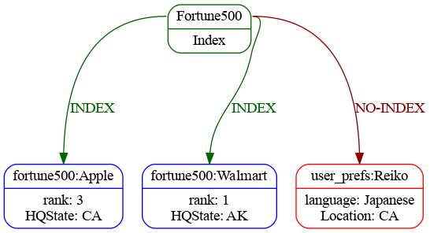
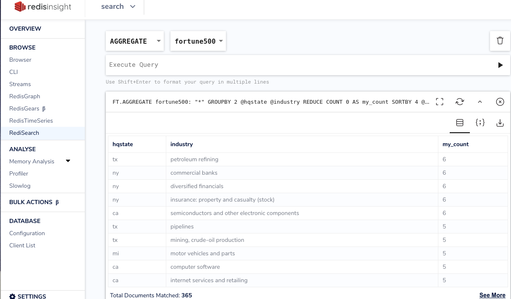
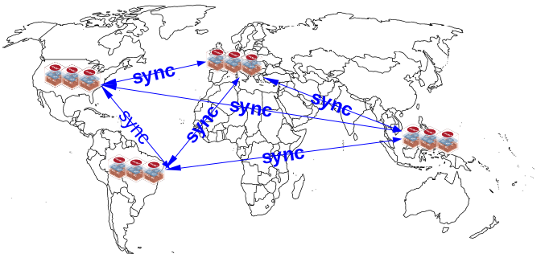

RediSearch
Agenda
- Why??
- Example Use Case
- Autocompletion
- Loading Data
- Searching
- Aggregating
- RedisLabs Extras
Search Database vs RDBMS
| Search | RDBMS |
|---|---|
| Where’s my data? | Give me this data |
| Index data but also store | Store data but also index |
| Built for de-normalized data | Optimized for normalized data |
| AP in CAP Theorum | CP in CAP Theorum |
Why Search in Redis??
Speed !!

Performance Blog
Why Search in Redis??
I want my data Now !!
Documents are available for reading immediately
Why Search in Redis??
Easy !!
Load the RediSearch module and go
No barriers to searching now
Example Use Case
Fortune 500 Companies
- Rank
- CEO
- Sector
- Industry
- Ticker
Set Up Autocompletion
> FT.SUGLEN ac
0
> FT.SUGADD ac Walmart 1.0
1
> FT.SUGADD ac "Berkshire Hathaway" 1.0
2
> FT.SUGADD ac "Apple" 1.0
3
...
> FT.SUGLEN ac
500
Query the Autocompleter
> FT.SUGGET ac birk
(empty list or set)
# No matches - Let's try Fuzzy matching
> FT.SUGGET ac birk FUZZY
1) "Berkshire Hathaway"
Code Example
from redisearch import AutoCompleter, Suggestion
ac = AutoCompleter(
'ac',
conn = client.redis
)
if ac.len() < 1:
load_data()
for row in csv_reader:
ac.add_suggestions(Suggestion(row[1], 1.0))
Loading Data
Pro-Tip
Consider aliasing your Index
before you need to re-index your data
Why Alias?
- I want to modify my schema without application changes
- I want to future proof my application
Alias: Initial
Alias: Create New Index with tags too
Alias: Flip Alias to New Index
Alias: Remove old index

By default, FT.DROPINDEX does not delete
the document hashes associated with the index.
Adding the DD option deletes the hashes as well.
Create our Schema
FT.CREATE fortune500
ON HASH PREFIX 1 fortune500:
LANGUAGE English
SCORE_FIELD title SCORE 0.5
SCHEMA
title TEXT WEIGHT 5.0
employees NUMERIC SORTABLE
Schema breakdown
FT.CREATE INDEX_NAME
ON HASH PREFIX <COUNT> PREFIX1 PREFIX2
FT.CREATE myIndex
ON HASH PREFIX 3 end_user: admin_user: ro_user:
Prefixes?!?
- Writing applications do not have to be search aware
- Add search indices on “legacy” data
- Flexibility to add new fields or un-indexed fields
Languages
FT.CREATE fortune500
...
LANGUAGE English
...
| Arabic | Danish | Dutch | English | Finnish |
| French | German | Hungarian | Italian | Norwegian |
| Portuguese | Romanian | Russian | Spanish | |
| Swedish | Tamil | Turkish | Chinese | |
Languages - Why?
Stemming
- search going will return “going”, “go”, “gone”
- plurals, verb forms
- suffixes eg: ational ation ator: replace by ate
- custom dictionaries are possible
Scoring
FT.CREATE fortune500
...
SCORE_FIELD title SCORE 1.0
SCORE_FIELD industry SCORE 0.5
...
Scoring
> FT.SEARCH fortune500 "%computer%" WITHSCORES
2) "fortune500:ComputerSciences"
3) "2.5"
4) 1) "rank"
2) "379"
3) "website"
4) "http://www.dxc.technology"
...
5) "fortune500:ActivisionBlizzard"
6) "0.5"
7) 1) "rank"
2) "406"
...
10) "Computer Software"
Searching
https://oss.redislabs.com/redisearch/Query_Syntax/Searching
Range Match
@assets:[20000, 30000]
Negative Match
-@hqstate:(NY|CA)
Searching
Optional Match
~@sector:\"Health Care\""
Fuzzy Match
@ceo:%%Brian%%
Searching - Find Everything
> FT.SEARCH fortune500 "*" LIMIT 0 1
1) (integer) 500
2) "fortune500:TollBrothers"
3) 1) "rank"
2) "497"
3) "website"
4) "http://www.tollbrothers.com"
5) "employees"
6) "4200"
7) "sector"
8) "Engineering & Construction"
9) "industry"
...
Searching - Query by field
> FT.SEARCH fortune500 "@assets:[20000, 30000]
-@hqstate:NY ~@sector:\"Health Care\"" WITHSCORES
2) "fortune500:CommunityHealthSystems"
3) "0.20000000000000001"
4) 1) "rank"
2) "130"
7) "sector"
8) "Health Care"
29) "fortune500:Level3Communications"
30) "0.10000000000000001"
31) 1) "rank"
2) "336"
7) "sector"
8) "Telecommunications"
Searching - Code
from redisearch import Client, Query
client = Client('fortune500')
client.search(Query("technology").limit_fields('sector')).docs
Searching - Tags
| Pros | Cons |
|---|---|
| Easy to add tags | Low cardinality is critical |
| Super efficient search | Only exact matches |
| Low storage requirements | |
Aggregations
https://oss.redislabs.com/redisearch/Aggregations/Aggregations
> FT.AGGREGATE fortune500 "*" GROUPBY 1 @hqstate
REDUCE COUNT 0 AS my_count SORTBY 2 @my_count DESC LIMIT 0 2
1) (integer) 37
2) 1) "hqstate"
2) "ny"
3) "my_count"
4) "54"
3) 1) "hqstate"
2) "ca"
3) "my_count"
4) "53"
Aggregations with functions
> FT.AGGREGATE fortune500 "*" APPLY "upper(@hqstate)" AS state
GROUPBY 1 @state REDUCE COUNT 0 AS my_count
SORTBY 2 @my_count DESC LIMIT 0 2
1) (integer) 37
2) 1) "state"
2) "NY"
3) "my_count"
4) "54"
3) 1) "state"
2) "CA"
3) "my_count"
4) "53"
Aggregations with functions
from redisearch import Client, aggregation, reducers
client = Client('fortune500')
ar = aggregation.AggregateRequest().
group_by("@hqcity", reducers.count().alias('my_count')).
sort_by(aggregation.Desc('@my_count'))
client.aggregate(ar).rows
Aggregations Caveat
RedisLabs Extras
Redis Insight
https://redislabs.com/redisinsight/
Free!
Redis Insight Integrations - Search

Redis Enterprise Active/Active

- Based off of CRDTs
- Used for
- Disaster Recovery
- Data Migration
- Enhanced Uptime